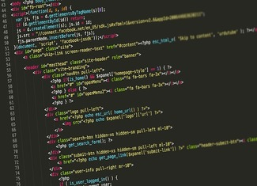

Algoritmo e Lógica de Programação Bases da Internet Criação de Conteúdo na Web Design Digital Inglês I Leitura e Produção de Texto Fundamentos de Matemática Elementar Padrões de Projetos de Sítios Internet I